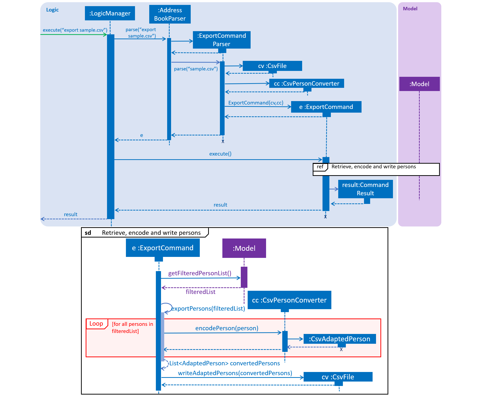

By: Team F09-03 Since: Aug 2018 Licence: MIT
- 1. Setting up
- 2. Design
- 3. Implementation
- 4. Documentation
- 5. Testing
- 6. Dev Ops
- Appendix A: Suggested Programming Tasks to Get Started
- Appendix B: Product Scope
- Appendix C: User Stories
- Appendix D: Use Cases
- D.1. Use case: Filter guest list based on status of payment and mass message those who have not paid
- D.2. Use case: Filter based on specific requirements and mass message all guests
- D.3. Use case: Review details while organising the event
- D.4. Use case: Sending tickets to guests via email
- D.5. Use case: Providing smooth registration on the day of the event
- D.6. Use case: Importing large number of guests into the guest list of an event
- D.7. Use case: Export guest list of an event (to CSV file format)
- Appendix E: Non Functional Requirements
- Appendix F: Glossary
- Appendix G: Product Survey
- Appendix H: Instructions for Manual Testing
1. Setting up
1.1. Prerequisites
-
JDK
9or laterJDK 10on Windows will fail to run tests in headless mode due to a JavaFX bug. Windows developers are highly recommended to use JDK9. -
IntelliJ IDE
IntelliJ by default has Gradle and JavaFx plugins installed.
Do not disable them. If you have disabled them, please go toFile>Settings>Pluginsto re-enable them.
1.2. Setting up the project in your computer
-
Fork this repo, and clone the fork to your computer
-
Open IntelliJ (if you are not in the welcome screen, click
File>Close Projectto close the existing project dialog first) -
Set up the correct JDK version for Gradle
-
Click
Configure>Project Defaults>Project Structure -
Click
New…and find the directory of the JDK
-
-
Click
Import Project -
Locate the
build.gradlefile and select it. ClickOK -
Click
Open as Project -
Click
OKto accept the default settings -
Open a console and run the command
gradlew processResources(Mac/Linux:./gradlew processResources). It should finish with theBUILD SUCCESSFULmessage.
This will generate all resources required by the application and tests.
1.3. Verifying the setup
-
Run the
seedu.address.MainAppand try a few commands -
Run the tests to ensure they all pass.
1.4. Configurations to do before writing code
1.4.1. Configuring the coding style
This project follows oss-generic coding standards. IntelliJ’s default style is mostly compliant with ours but it uses a different import order from ours. To rectify,
-
Go to
File>Settings…(Windows/Linux), orIntelliJ IDEA>Preferences…(macOS) -
Select
Editor>Code Style>Java -
Click on the
Importstab to set the order-
For
Class count to use import with '*'andNames count to use static import with '*': Set to999to prevent IntelliJ from contracting the import statements -
For
Import Layout: The order isimport static all other imports,import java.*,import javax.*,import org.*,import com.*,import all other imports. Add a<blank line>between eachimport
-
Optionally, you can follow the UsingCheckstyle.adoc document to configure Intellij to check style-compliance as you write code.
1.4.2. Updating documentation to match your fork
After forking the repo, the documentation will still have the SE-EDU branding and refer to the se-edu/addressbook-level4 repo.
If you plan to develop this fork as a separate product (i.e. instead of contributing to se-edu/addressbook-level4), you should do the following:
-
Configure the site-wide documentation settings in
build.gradle, such as thesite-name, to suit your own project. -
Replace the URL in the attribute
repoURLinDeveloperGuide.adocandUserGuide.adocwith the URL of your fork.
1.4.3. Setting up CI
Set up Travis to perform Continuous Integration (CI) for your fork. See UsingTravis.adoc to learn how to set it up.
After setting up Travis, you can optionally set up coverage reporting for your team fork (see UsingCoveralls.adoc).
| Coverage reporting could be useful for a team repository that hosts the final version but it is not that useful for your personal fork. |
Optionally, you can set up AppVeyor as a second CI (see UsingAppVeyor.adoc).
| Having both Travis and AppVeyor ensures your App works on both Unix-based platforms and Windows-based platforms (Travis is Unix-based and AppVeyor is Windows-based) |
1.4.4. Getting started with coding
When you are ready to start coding,
-
Get some sense of the overall design by reading Section 2.1, “Architecture”.
-
Take a look at Appendix A, Suggested Programming Tasks to Get Started.
2. Design
2.1. Architecture

The Architecture Diagram given above explains the high-level design of the App. Given below is a quick overview of each component.
The .pptx files used to create diagrams in this document can be found in the diagrams folder. To update a diagram, modify the diagram in the pptx file, select the objects of the diagram, and choose Save as picture.
|
Main has only one class called MainApp. It is responsible for,
-
At app launch: Initializes the components in the correct sequence, and connects them up with each other.
-
At shut down: Shuts down the components and invokes cleanup method where necessary.
Commons represents a collection of classes used by multiple other components. Two of those classes play important roles at the architecture level.
-
EventsCenter: This class (written using Google’s Event Bus library) is used by components to communicate with other components using events (i.e. a form of Event Driven design) -
LogsCenter: Used by many classes to write log messages to the App’s log file.
The rest of the App consists of four components.
Each of the four components
-
Defines its API in an
interfacewith the same name as the Component. -
Exposes its functionality using a
{Component Name}Managerclass.
For example, the Logic component (see the class diagram given below) defines it’s API in the Logic.java interface and exposes its functionality using the LogicManager.java class.

Events-Driven nature of the design
The Sequence Diagram below shows how the components interact for the scenario where the user issues the command delete 1.

delete 1 command (part 1)
Note how the Model simply raises a AddressBookChangedEvent when the Address Book data are changed, instead of asking the Storage to save the updates to the hard disk.
|
The diagram below shows how the EventsCenter reacts to that event, which eventually results in the updates being saved to the hard disk and the status bar of the UI being updated to reflect the 'Last Updated' time.

delete 1 command (part 2)
Note how the event is propagated through the EventsCenter to the Storage and UI without Model having to be coupled to either of them. This is an example of how this Event Driven approach helps us reduce direct coupling between components.
|
The sections below give more details of each component.
2.2. UI component

API : Ui.java
The UI consists of a MainWindow that is made up of parts e.g.CommandBox, ResultDisplay, PersonListPanel, StatusBarFooter, BrowserPanel etc. All these, including the MainWindow, inherit from the abstract UiPart class.
The UI component uses JavaFx UI framework. The layout of these UI parts are defined in matching .fxml files that are in the src/main/resources/view folder. For example, the layout of the MainWindow is specified in MainWindow.fxml
The UI component,
-
Executes user commands using the
Logiccomponent. -
Binds itself to some data in the
Modelso that the UI can auto-update when data in theModelchange. -
Responds to events raised from various parts of the App and updates the UI accordingly.
2.3. Logic component
API :
Logic.java
-
Logicuses theAddressBookParserclass to parse the user command. -
This results in a
Commandobject which is executed by theLogicManager. -
The command execution can affect the
Model(e.g. adding a person) and/or raise events. -
The result of the command execution is encapsulated as a
CommandResultobject which is passed back to theUi.
Given below is the Sequence Diagram for interactions within the Logic component for the execute("delete 1") API call.

delete 1 Command2.4. Model component

API : Model.java
The Model,
-
stores a
UserPrefobject that represents the user’s preferences. -
stores the Address Book data.
-
exposes an unmodifiable
ObservableList<Person>that can be 'observed' e.g. the UI can be bound to this list so that the UI automatically updates when the data in the list change. -
does not depend on any of the other three components.
As a more OOP model, we can store a Tag list in Address Book, which Person can reference. This would allow Address Book to only require one Tag object per unique Tag, instead of each Person needing their own Tag object. An example of how such a model may look like is given below. |
2.5. Storage component

API : Storage.java
The Storage component,
-
can save
UserPrefobjects in json format and read it back. -
can save the Address Book data in xml format and read it back.
2.6. Common classes
Classes used by multiple components are in the seedu.addressbook.commons package.
3. Implementation
This section describes some noteworthy details on how certain features are implemented.
3.1. Undo/Redo feature
3.1.1. Current Implementation
The undo/redo mechanism is facilitated by VersionedAddressBook.
It extends AddressBook with an undo/redo history, stored internally as an addressBookStateList and currentStatePointer.
Additionally, it implements the following operations:
-
VersionedAddressBook#commit()— Saves the current address book state in its history. -
VersionedAddressBook#undo()— Restores the previous address book state from its history. -
VersionedAddressBook#redo()— Restores a previously undone address book state from its history.
These operations are exposed in the Model interface as Model#commitAddressBook(), Model#undoAddressBook() and Model#redoAddressBook() respectively.
Given below is an example usage scenario and how the undo/redo mechanism behaves at each step.
Step 1. The user launches the application for the first time. The VersionedAddressBook will be initialized with the initial address book state, and the currentStatePointer pointing to that single address book state.

Step 2. The user executes delete 5 command to delete the 5th person in the address book. The delete command calls Model#commitAddressBook(), causing the modified state of the address book after the delete 5 command executes to be saved in the addressBookStateList, and the currentStatePointer is shifted to the newly inserted address book state.

Step 3. The user executes add n/David … to add a new person. The add command also calls Model#commitAddressBook(), causing another modified address book state to be saved into the addressBookStateList.

If a command fails its execution, it will not call Model#commitAddressBook(), so the address book state will not be saved into the addressBookStateList.
|
Step 4. The user now decides that adding the person was a mistake, and decides to undo that action by executing the undo command. The undo command will call Model#undoAddressBook(), which will shift the currentStatePointer once to the left, pointing it to the previous address book state, and restores the address book to that state.

If the currentStatePointer is at index 0, pointing to the initial address book state, then there are no previous address book states to restore. The undo command uses Model#canUndoAddressBook() to check if this is the case. If so, it will return an error to the user rather than attempting to perform the undo.
|
The following sequence diagram shows how the undo operation works:

The redo command does the opposite — it calls Model#redoAddressBook(), which shifts the currentStatePointer once to the right, pointing to the previously undone state, and restores the address book to that state.
If the currentStatePointer is at index addressBookStateList.size() - 1, pointing to the latest address book state, then there are no undone address book states to restore. The redo command uses Model#canRedoAddressBook() to check if this is the case. If so, it will return an error to the user rather than attempting to perform the redo.
|
Step 5. The user then decides to execute the command list. Commands that do not modify the address book, such as list, will usually not call Model#commitAddressBook(), Model#undoAddressBook() or Model#redoAddressBook(). Thus, the addressBookStateList remains unchanged.

Step 6. The user executes clear, which calls Model#commitAddressBook(). Since the currentStatePointer is not pointing at the end of the addressBookStateList, all address book states after the currentStatePointer will be purged. We designed it this way because it no longer makes sense to redo the add n/David … command. This is the behavior that most modern desktop applications follow.

The following activity diagram summarizes what happens when a user executes a new command:

3.1.2. Design Considerations
Aspect: How undo & redo executes
-
Alternative 1 (current choice): Saves the entire address book.
-
Pros: Easy to implement.
-
Cons: May have performance issues in terms of memory usage.
-
-
Alternative 2: Individual command knows how to undo/redo by itself.
-
Pros: Will use less memory (e.g. for
delete, just save the person being deleted). -
Cons: We must ensure that the implementation of each individual command are correct.
-
Aspect: Data structure to support the undo/redo commands
-
Alternative 1 (current choice): Use a list to store the history of address book states.
-
Pros: Easy for new Computer Science student undergraduates to understand, who are likely to be the new incoming developers of our project.
-
Cons: Logic is duplicated twice. For example, when a new command is executed, we must remember to update both
HistoryManagerandVersionedAddressBook.
-
-
Alternative 2: Use
HistoryManagerfor undo/redo-
Pros: We do not need to maintain a separate list, and just reuse what is already in the codebase.
-
Cons: Requires dealing with commands that have already been undone: We must remember to skip these commands. Violates Single Responsibility Principle and Separation of Concerns as
HistoryManagernow needs to do two different things.
-
3.2. Filter feature
3.2.1. Current Implementation
The filter mechanism is facilitated by VersionedAddressBook.
Given below is an example usage scenario and how the filter mechanism behaves at each step.
Step 1. The user launches the application for the first time. The VersionedAddressBook
will be initialized with the initial address book state.
Step 2. The user executes filter t/vegan pa/paid command to obtain a list of people
who are Vegan and have paid.
The filter command calls Model#getFilteredPersonList().
The following sequence diagram shows how the filter operation works:
3.3. Find feature
3.3.1. Current Implementation
The find mechanism is facilitated by VersionedAddressBook.
Given below is an example usage scenario and how the find mechanism behaves at each step.
Step 1. The user launches the application for the first time. The VersionedAddressBook
will be initialized with the initial address book state.
Step 2. The user executes find n/Alex p/92743824 e/johndoe@gmail.com command to obtain
a list of people who have the name Alex, phone number 92743824 or email address
johndoe@gmail.com.
The find command calls Model#getFilteredPersonList().
The following sequence diagram shows how the find operation works:
3.4. Add/Delete Event feature
3.4.1. Current Implementation
The add_event mechanism is facilitated by VersionedAddressBook.
Given below is an example usage scenario and how the add_event mechanism behaves at each step.
Step 1. The user launches the application for the first time. The VersionedAddressBook will be initialized with the initial address book state, and the currentStatePointer pointing to that single address book state.
Step 2. The user executes add_event n/Wedding t/8thOct t/10AM command to add in details about the event they are currently organising.
The add_event command calls Model#addEvent() to add in the event details and 'Model#commitAddressBook()', causing the modified state of the address book after the add_event n/Wedding t/8thOct t/10AM command executes to be saved in the addressBookStateList, and the currentStatePointer is shifted to the newly inserted address book state.
If a command fails its execution, it will not call Model#commitAddressBook(), so the address book state will not be saved into the addressBookStateList.
|
If the user has added in the details of the event they are organising, then another set of event details should not be stored.
The add_event command uses Model#hasEvent() to check if this is the case. If so, it will return an error to the user.
|
Step 3. After the event has taken place, the user decides to organise another event with the same guest list and decides to delete the event details currently stored in the application using the 'delete_event' command.
The delete_event command calls Model#deleteEvent to delete the event’s details. The command also calls Model#commitAddressBook(), causing another modified address book state to be saved into the addressBookStateList.
If a command fails its execution, it will not call Model#commitAddressBook(), so the address book state will not be saved into the addressBookStateList.
|
If the user has not added in the details of an event, then there are no specific event details to delete.
The delete_event command uses Model#hasEvent() to check if this is the case. If so, it will return an error to the user.
|
The following sequence diagram shows how the add_event operation works:

3.5. Add/Remove Tag generation feature
3.5.1. Current Implementation
The addTag/removeTag mechanism is facilitated by AddressBook as it provides an editable form of a ReadOnlyAddressBook provided by the Model interface.
Additionally, it implements the following operations:
These operations are exposed in the Model interface as Model#commitAddressBook(), Model#getFilteredPersonList(), and Model#resetData() respectively.
Given below is an example usage scenario and how the addTag/removeTag mechanism behaves at each step.
Step 1. The user launches the application for the first time. The AddressBook will be initialized with the initial address book state.
Step 2. The user executes the command import guestlist.csv to import a list of guests and add them to the current state of AddressBook.
If a command fails its execution, it will not call Model#commitAddressBook(), so the address book state will not be saved.
|
Step 3. The user now decides to add a set of tags to all guests in the list and executes the command addTag t/VIP t/Platinum to add the tags VIP and Platinum.
Step 4. A ReadOnlyAddressBook is created and an editable address book is created using AddressBook. To add to this, the current filtered list is accessed using Model#getFilteredPersonList()
Step 5. The set of tags are added to all guests in the editable address book via AddressBook#addTag() and AddressBook#addTagFromPerson()
Step 6. Finally, Model#resetData() and Model#commitAddressBook() are called to reset the current state of the list with the updated tags.
The removeTag command does the opposite, and removes a set of tags from all persons in the guest list. However, the workflow is similar to addTag; a new AddressBook is created and edited accordingly as per the command.
| If there are no guests in the current list, or if the removeTag command tries to remove non-existent tags, the function will not execute and the current state of the list will be preserved. |
The following sequence diagram summarizes how the addTag() and removeTag() function work:
| The sequence diagram uses the case of addTag() to highlight how the application responds to this command. However, the same logic and sequence flow is applied to the removeTag() command. |

3.6. Import/Export Command
3.6.1. Current Implementation
The import and export command enables batch importation and exportation of people into and out of the guest list. Currently the commands only support comma-separated value file format (CSV), however, it is open for the addition of new formats.
The Import/Export features are mainly facilitated by objects of 2 classes. The CsvFile and CsvConverter objects. The following class diagram shows the relationship between the classes involved in the import/export.

The CsvConverter class enables us decode/encode between the Person class and the desired format (CSV). The CsvConverter class implements PersonConverter interface which requires the implementing class to be able to decode/encode Person objects to the desired format.
The 'CsvFile' class enables us to read and write 'AdaptedPerson' to a file. CsvFile Implements the SupportedFile class which requires it to read and write lists of AdaptedPerson objects.
CsvAdaptedPerson extends AdaptedPerson, it represents a person in the respective file formats, which our case is CSV.
The import command will first read the csv file and loop through all the person data and add them into the model. Badly formatted csv lines will be skipped and the user are given feedback on the number of successful imports in the CommandResult Ui component. The following sequence diagram shows how the Import operation works:
|
|


The export command will only export the currently filtered list so as to allow users to select specific groups of people. The following sequence diagram shows how the Export operation works:
 |
|

Given below is an example usage scenario and how to support new file formats (Eg. VCard).
Step 1. Create new class to extend AdaptedPerson abstract class.
Eg. VcardAdaptedPerson This will represent the a person in the VCard file format.
Step 2. Create new class to implement PersonConverter interface. Implement the encodePerson and decodePerson method.
Eg. VcardConverter The methods in this class, contains the logic to convert between the `Person` and `AdaptedPerson` objects.
Step 3. Create new class to implement CsvFile interface. Implement readAdaptedPersons and writeAdaptedPersons.
Eg. VcardFile The above mentioned methods will allow you to interface with the underlying files.
Step 4. Add checks in the ImportCommandParser and ExportCommandParser to allow the application to call the classes that you have created.
3.6.2. Design Considerations
Aspect: How to implement decoding/encoding functionality in Import/Export command
-
Alternative 1 (current choice): import & export command be able to do accept a general PersonConverter
-
Pros: Reduction in code duplication when supporting other file-formats in the future. Easier to mock and do unit tests.
-
Cons: More complicated to implement.
-
-
Alternative 2: Each format has its own command which knows how to do the required conversion
-
Pros: We do not need to check for the required import/export format required.
-
Cons: Higher testing overhead for possible numerous types of export & import command. Duplicated boilerplate code.
-
Aspect: How to implement the reading/writing of file functionality in Import/Export command
-
Alternative 1: Abstract the writing/reading of files into separate classes,
SupportedFileinterface andCsvFileclass (current choice)-
Pros: Able to add support for other file formats with changing exisiting code.
-
Cons: Increased code complexity.
-
-
Alternative 2: Use a utility class with static methods
-
Pros: Simple to implement.
-
Cons: Violates open-close principle. Code will only work for CSV files. Tightly coupled.
-
3.7. Mark/Unmark Command
The mark/unmark mechanism is facilitated by Model.
Given below is an example usage scenario and how the mark/unmark command executes at each step:
Step 1. The user launches the application for the first time. The VersionedAddressBook will be initialized with the initial address book state and the currentStatePointer pointing to that single address book state.
Step 2. The user executes the command import guestlist.csv to import a list of guest and add them to the current state of the AddressBook.
Alternatively, the user can execute the command add n/John Doe p/98765432 e/johnd@gmail.com pa/PAID a/ABSENT t/NORMAL to create an instance of one guest and add them to the current state of AddressBook.
|
Step 3. The user will execute the command mark 98765432 to mark the attendance of the Person.
Step 4. An instance of filteredPersonList is retrieved from the model using MODEL#getFliteredPersonList. A linear search is then executed on the filteredPersonList to find a Person with the same phone number as 98765432.
If there is no matching phone number found, a COMMANDEXCEPTION will be thrown to indicate nobody in the list has the phone number.
|
Step 5. After retrieving the information from the discovered Person, another Person is created with the same fields with the exception of the attendance field being changed from ABSENT to PRESENT.
Step 6. Finally, the entry is updated using MODEL#updatePerson to transfer the new information into the filteredPersonList before commitAddressBook is executed to save the state of the AddressBook.
The following sequence diagram shows how the add_event operation works:

3.8. [Proposed] Data Encryption
{We plan on implementing a data encryption feature such that when the user chooses to, the data stored in the addressbook will be encrypted and display ceases to show all information.}
3.9. Logging
We are using java.util.logging package for logging. The LogsCenter class is used to manage the logging levels and logging destinations.
-
The logging level can be controlled using the
logLevelsetting in the configuration file (See Section 3.10, “Configuration”) -
The
Loggerfor a class can be obtained usingLogsCenter.getLogger(Class)which will log messages according to the specified logging level -
Currently log messages are output through:
Consoleand to a.logfile.
Logging Levels
-
SEVERE: Critical problem detected which may possibly cause the termination of the application -
WARNING: Can continue, but with caution -
INFO: Information showing the noteworthy actions by the App -
FINE: Details that is not usually noteworthy but may be useful in debugging e.g. print the actual list instead of just its size
3.10. Configuration
Certain properties of the application can be controlled (e.g App name, logging level) through the configuration file (default: config.json).
4. Documentation
We use asciidoc for writing documentation.
| We chose asciidoc over Markdown because asciidoc, although a bit more complex than Markdown, provides more flexibility in formatting. |
4.1. Editing Documentation
See UsingGradle.adoc to learn how to render .adoc files locally to preview the end result of your edits.
Alternatively, you can download the AsciiDoc plugin for IntelliJ, which allows you to preview the changes you have made to your .adoc files in real-time.
4.2. Publishing Documentation
See UsingTravis.adoc to learn how to deploy GitHub Pages using Travis.
4.3. Converting Documentation to PDF format
We use Google Chrome for converting documentation to PDF format, as Chrome’s PDF engine preserves hyperlinks used in webpages.
Here are the steps to convert the project documentation files to PDF format.
-
Follow the instructions in UsingGradle.adoc to convert the AsciiDoc files in the
docs/directory to HTML format. -
Go to your generated HTML files in the
build/docsfolder, right click on them and selectOpen with→Google Chrome. -
Within Chrome, click on the
Printoption in Chrome’s menu. -
Set the destination to
Save as PDF, then clickSaveto save a copy of the file in PDF format. For best results, use the settings indicated in the screenshot below.

4.4. Site-wide Documentation Settings
The build.gradle file specifies some project-specific asciidoc attributes which affects how all documentation files within this project are rendered.
Attributes left unset in the build.gradle file will use their default value, if any.
|
| Attribute name | Description | Default value |
|---|---|---|
|
The name of the website. If set, the name will be displayed near the top of the page. |
not set |
|
URL to the site’s repository on GitHub. Setting this will add a "View on GitHub" link in the navigation bar. |
not set |
|
Define this attribute if the project is an official SE-EDU project. This will render the SE-EDU navigation bar at the top of the page, and add some SE-EDU-specific navigation items. |
not set |
4.5. Per-file Documentation Settings
Each .adoc file may also specify some file-specific asciidoc attributes which affects how the file is rendered.
Asciidoctor’s built-in attributes may be specified and used as well.
Attributes left unset in .adoc files will use their default value, if any.
|
| Attribute name | Description | Default value |
|---|---|---|
|
Site section that the document belongs to.
This will cause the associated item in the navigation bar to be highlighted.
One of: * Official SE-EDU projects only |
not set |
|
Set this attribute to remove the site navigation bar. |
not set |
4.6. Site Template
The files in docs/stylesheets are the CSS stylesheets of the site.
You can modify them to change some properties of the site’s design.
The files in docs/templates controls the rendering of .adoc files into HTML5.
These template files are written in a mixture of Ruby and Slim.
|
Modifying the template files in |
5. Testing
5.1. Running Tests
There are three ways to run tests.
| The most reliable way to run tests is the 3rd one. The first two methods might fail some GUI tests due to platform/resolution-specific idiosyncrasies. |
Method 1: Using IntelliJ JUnit test runner
-
To run all tests, right-click on the
src/test/javafolder and chooseRun 'All Tests' -
To run a subset of tests, you can right-click on a test package, test class, or a test and choose
Run 'ABC'
Method 2: Using Gradle
-
Open a console and run the command
gradlew clean allTests(Mac/Linux:./gradlew clean allTests)
| See UsingGradle.adoc for more info on how to run tests using Gradle. |
Method 3: Using Gradle (headless)
Thanks to the TestFX library we use, our GUI tests can be run in the headless mode. In the headless mode, GUI tests do not show up on the screen. That means the developer can do other things on the Computer while the tests are running.
To run tests in headless mode, open a console and run the command gradlew clean headless allTests (Mac/Linux: ./gradlew clean headless allTests)
5.2. Types of tests
We have two types of tests:
-
GUI Tests - These are tests involving the GUI. They include,
-
System Tests that test the entire App by simulating user actions on the GUI. These are in the
systemtestspackage. -
Unit tests that test the individual components. These are in
seedu.address.uipackage.
-
-
Non-GUI Tests - These are tests not involving the GUI. They include,
-
Unit tests targeting the lowest level methods/classes.
e.g.seedu.address.commons.StringUtilTest -
Integration tests that are checking the integration of multiple code units (those code units are assumed to be working).
e.g.seedu.address.storage.StorageManagerTest -
Hybrids of unit and integration tests. These test are checking multiple code units as well as how the are connected together.
e.g.seedu.address.logic.LogicManagerTest
-
5.3. Troubleshooting Testing
Problem: HelpWindowTest fails with a NullPointerException.
-
Reason: One of its dependencies,
HelpWindow.htmlinsrc/main/resources/docsis missing. -
Solution: Execute Gradle task
processResources.
6. Dev Ops
6.1. Build Automation
See UsingGradle.adoc to learn how to use Gradle for build automation.
6.2. Continuous Integration
We use Travis CI and AppVeyor to perform Continuous Integration on our projects. See UsingTravis.adoc and UsingAppVeyor.adoc for more details.
6.3. Coverage Reporting
We use Coveralls to track the code coverage of our projects. See UsingCoveralls.adoc for more details.
6.4. Documentation Previews
When a pull request has changes to asciidoc files, you can use Netlify to see a preview of how the HTML version of those asciidoc files will look like when the pull request is merged. See UsingNetlify.adoc for more details.
6.5. Making a Release
Here are the steps to create a new release.
-
Update the version number in
MainApp.java. -
Generate a JAR file using Gradle.
-
Tag the repo with the version number. e.g.
v0.1 -
Create a new release using GitHub and upload the JAR file you created.
6.6. Managing Dependencies
A project often depends on third-party libraries. For example, Address Book depends on the Jackson library for XML parsing. Managing these dependencies can be automated using Gradle. For example, Gradle can download the dependencies automatically, which is better than these alternatives.
a. Include those libraries in the repo (this bloats the repo size)
b. Require developers to download those libraries manually (this creates extra work for developers)
Appendix A: Suggested Programming Tasks to Get Started
Suggested path for new programmers:
-
First, add small local-impact (i.e. the impact of the change does not go beyond the component) enhancements to one component at a time. Some suggestions are given in Section A.1, “Improving each component”.
-
Next, add a feature that touches multiple components to learn how to implement an end-to-end feature across all components. Section A.2, “Creating a new command:
remark” explains how to go about adding such a feature.
A.1. Improving each component
Each individual exercise in this section is component-based (i.e. you would not need to modify the other components to get it to work).
Logic component
Scenario: You are in charge of logic. During dog-fooding, your team realize that it is troublesome for the user to type the whole command in order to execute a command. Your team devise some strategies to help cut down the amount of typing necessary, and one of the suggestions was to implement aliases for the command words. Your job is to implement such aliases.
Do take a look at Section 2.3, “Logic component” before attempting to modify the Logic component.
|
-
Add a shorthand equivalent alias for each of the individual commands. For example, besides typing
clear, the user can also typecto remove all persons in the list.
Model component
Scenario: You are in charge of model. One day, the logic-in-charge approaches you for help. He wants to implement a command such that the user is able to remove a particular tag from everyone in the address book, but the model API does not support such a functionality at the moment. Your job is to implement an API method, so that your teammate can use your API to implement his command.
Do take a look at Section 2.4, “Model component” before attempting to modify the Model component.
|
-
Add a
removeTag(Tag)method. The specified tag will be removed from everyone in the address book.
Ui component
Scenario: You are in charge of ui. During a beta testing session, your team is observing how the users use your address book application. You realize that one of the users occasionally tries to delete non-existent tags from a contact, because the tags all look the same visually, and the user got confused. Another user made a typing mistake in his command, but did not realize he had done so because the error message wasn’t prominent enough. A third user keeps scrolling down the list, because he keeps forgetting the index of the last person in the list. Your job is to implement improvements to the UI to solve all these problems.
Do take a look at Section 2.2, “UI component” before attempting to modify the UI component.
|
-
Use different colors for different tags inside person cards. For example,
friendstags can be all in brown, andcolleaguestags can be all in yellow.Before

After

-
Modify
NewResultAvailableEventsuch thatResultDisplaycan show a different style on error (currently it shows the same regardless of errors).Before

After

-
Modify the
StatusBarFooterto show the total number of people in the address book.Before

After

Storage component
Scenario: You are in charge of storage. For your next project milestone, your team plans to implement a new feature of saving the address book to the cloud. However, the current implementation of the application constantly saves the address book after the execution of each command, which is not ideal if the user is working on limited internet connection. Your team decided that the application should instead save the changes to a temporary local backup file first, and only upload to the cloud after the user closes the application. Your job is to implement a backup API for the address book storage.
Do take a look at Section 2.5, “Storage component” before attempting to modify the Storage component.
|
-
Add a new method
backupAddressBook(ReadOnlyAddressBook), so that the address book can be saved in a fixed temporary location.
A.2. Creating a new command: remark
By creating this command, you will get a chance to learn how to implement a feature end-to-end, touching all major components of the app.
Scenario: You are a software maintainer for addressbook, as the former developer team has moved on to new projects. The current users of your application have a list of new feature requests that they hope the software will eventually have. The most popular request is to allow adding additional comments/notes about a particular contact, by providing a flexible remark field for each contact, rather than relying on tags alone. After designing the specification for the remark command, you are convinced that this feature is worth implementing. Your job is to implement the remark command.
A.2.1. Description
Edits the remark for a person specified in the INDEX.
Format: remark INDEX r/[REMARK]
Examples:
-
remark 1 r/Likes to drink coffee.
Edits the remark for the first person toLikes to drink coffee. -
remark 1 r/
Removes the remark for the first person.
A.2.2. Step-by-step Instructions
[Step 1] Logic: Teach the app to accept 'remark' which does nothing
Let’s start by teaching the application how to parse a remark command. We will add the logic of remark later.
Main:
-
Add a
RemarkCommandthat extendsCommand. Upon execution, it should just throw anException. -
Modify
AddressBookParserto accept aRemarkCommand.
Tests:
-
Add
RemarkCommandTestthat tests thatexecute()throws an Exception. -
Add new test method to
AddressBookParserTest, which tests that typing "remark" returns an instance ofRemarkCommand.
[Step 2] Logic: Teach the app to accept 'remark' arguments
Let’s teach the application to parse arguments that our remark command will accept. E.g. 1 r/Likes to drink coffee.
Main:
-
Modify
RemarkCommandto take in anIndexandStringand print those two parameters as the error message. -
Add
RemarkCommandParserthat knows how to parse two arguments, one index and one with prefix 'r/'. -
Modify
AddressBookParserto use the newly implementedRemarkCommandParser.
Tests:
-
Modify
RemarkCommandTestto test theRemarkCommand#equals()method. -
Add
RemarkCommandParserTestthat tests different boundary values forRemarkCommandParser. -
Modify
AddressBookParserTestto test that the correct command is generated according to the user input.
[Step 3] Ui: Add a placeholder for remark in PersonCard
Let’s add a placeholder on all our PersonCard s to display a remark for each person later.
Main:
-
Add a
Labelwith any random text insidePersonListCard.fxml. -
Add FXML annotation in
PersonCardto tie the variable to the actual label.
Tests:
-
Modify
PersonCardHandleso that future tests can read the contents of the remark label.
[Step 4] Model: Add Remark class
We have to properly encapsulate the remark in our Person class. Instead of just using a String, let’s follow the conventional class structure that the codebase already uses by adding a Remark class.
Main:
-
Add
Remarkto model component (you can copy fromAddress, remove the regex and change the names accordingly). -
Modify
RemarkCommandto now take in aRemarkinstead of aString.
Tests:
-
Add test for
Remark, to test theRemark#equals()method.
[Step 5] Model: Modify Person to support a Remark field
Now we have the Remark class, we need to actually use it inside Person.
Main:
-
Add
getRemark()inPerson. -
You may assume that the user will not be able to use the
addandeditcommands to modify the remarks field (i.e. the person will be created without a remark). -
Modify
SampleDataUtilto add remarks for the sample data (delete youraddressBook.xmlso that the application will load the sample data when you launch it.)
[Step 6] Storage: Add Remark field to XmlAdaptedPerson class
We now have Remark s for Person s, but they will be gone when we exit the application. Let’s modify XmlAdaptedPerson to include a Remark field so that it will be saved.
Main:
-
Add a new Xml field for
Remark.
Tests:
-
Fix
invalidAndValidPersonAddressBook.xml,typicalPersonsAddressBook.xml,validAddressBook.xmletc., such that the XML tests will not fail due to a missing<remark>element.
[Step 6b] Test: Add withRemark() for PersonBuilder
Since Person can now have a Remark, we should add a helper method to PersonBuilder, so that users are able to create remarks when building a Person.
Tests:
-
Add a new method
withRemark()forPersonBuilder. This method will create a newRemarkfor the person that it is currently building. -
Try and use the method on any sample
PersoninTypicalPersons.
[Step 7] Ui: Connect Remark field to PersonCard
Our remark label in PersonCard is still a placeholder. Let’s bring it to life by binding it with the actual remark field.
Main:
-
Modify
PersonCard's constructor to bind theRemarkfield to thePerson's remark.
Tests:
-
Modify
GuiTestAssert#assertCardDisplaysPerson(…)so that it will compare the now-functioning remark label.
[Step 8] Logic: Implement RemarkCommand#execute() logic
We now have everything set up… but we still can’t modify the remarks. Let’s finish it up by adding in actual logic for our remark command.
Main:
-
Replace the logic in
RemarkCommand#execute()(that currently just throws anException), with the actual logic to modify the remarks of a person.
Tests:
-
Update
RemarkCommandTestto test that theexecute()logic works.
A.2.3. Full Solution
See this PR for the step-by-step solution.
Appendix B: Product Scope
Target user profile:
-
has a need to manage a significant number of contacts
-
prefer desktop apps over other types
-
can type fast
-
prefers typing over mouse input
-
is reasonably comfortable using CLI apps
Value proposition: manage contacts faster than a typical mouse/GUI driven app
Appendix C: User Stories
Priorities: High (must have) - * * *, Medium (nice to have) - * *, Low (unlikely to have) - *
| Priority | As a … | I want to … | So that I can… |
|---|---|---|---|
|
event planner |
be able to mark attendance of guests easily |
minimise holdup as much as possible |
|
event planner |
be able to send mass emails to guests |
remind them about the event |
|
event planner |
be able to tag guests with specific labels |
take note of any extra details if necessary |
|
event planner specialising in large events such as weddings |
tag all my guests in the list at once |
save a lot of time and increase efficiency, as opposed to editing the tags of each individual person |
|
event planner specialising in large weddings |
be able to track the guest list for each event |
know how many guests there are in each event in order to know which event I should focus more on |
|
event planner specialising in concerts |
be able to filter my guests to see who have not paid for the event |
easily see who I need to remind |
|
event planner |
be able to view all the important details of guests |
get all the necessary details at one go for easier planning |
|
event planner specialising in concerts and arts festivals |
be able to send the guests their tickets via email |
ensure that all guests will have their tickets with them and there will be no complications |
|
event planner for a large event |
be able to add large numbers of guests to the guest list efficiently |
reduce time spent on adding them one at a time. |
|
event planner for an event with a few organisers |
be able to share the guest list for an event with my fellow organizers easily |
I can inform them of any changes that I have made |
|
event planner |
filter my guests based on dietary requirements |
so that I can plan my event accordingly |
|
event planner specialising in conferences and recruitment talks |
be able to specify the dress code of the event |
ensure that the guests will be appropriately attired |
|
event planner specialising in government and official conferences |
be able to know who the VIP guests are and how many of them there are |
make appropriate accommodation for them |
|
event planner |
have the tickets to contain a QR code instead of using the guest’s phone number |
scan them using a smart phone or any other phone with scanning capability |
Appendix D: Use Cases
(For all use cases below, the System is Invités and the Actor is the user, unless specified otherwise)
Use case: Import guest data and update payment status
Actor: Application User - Event Planner
MSS
-
User opens application and either imports csv file or adds each guest in the application.
-
System asks user to enter a command.
-
User enters a command to mark those who have paid.
-
System updates the file accordingly.
Use case ends.
D.1. Use case: Filter guest list based on status of payment and mass message those who have not paid
Actor: Application User - Event Planner
MSS
-
User opens application.
-
System asks user to enter a command.
-
User enters a command to filter out those who have yet to pay.
-
System shows an indexed list of these guests with their names, phone numbers, email address, payment status, attendance status and tags specified, if there are people in that category.
-
User enters a command to email all in the currently displayed list, to remind them to make the payment.
-
System sends all guests in the "not paid" list an email to remind them.
Use case ends.
D.2. Use case: Filter based on specific requirements and mass message all guests
Actor: Application User - Event Planner
MSS
-
User opens application and either imports csv file or adds each guest in the application.
-
System asks user to enter a command.
-
User enters a command to filter guests based on a requirement specified (e.g. dietary requirement).
-
System displays list of all such guests, displaying their name, phone number, email address, payment status, attendance status and tags, if there are people in that category.
-
User then enters command to list all guests.
-
System displays everyone on the guest list along with their name, phone number, email address, payment status, attendance status and tags.
-
User enters command to remind all guests about the event.
-
System sends all guests an email reminding them about the event.
Use case ends.
D.3. Use case: Review details while organising the event
Actor: Application User - Event Planner
MSS
-
User opens application and either imports csv file or adds each guest in the application.
-
System will display the list of guests with details of each guest, such as name, phone number, email address, payment status, attendance status and tags, such as, dietary requirements, VIP, etc in a row for ease of access. System will display the general information of the event on the left of the list of guests, such as name, date, time and venue of event, dress code, number of people attending the event so far, etc. System asks user to enter a command.
-
User enters command to filter by some specific requirement, so that user is able to make arrangements accordingly.
-
System lists all guests with the specified requirement, if available.
Use case ends.
D.4. Use case: Sending tickets to guests via email
Actor: Application User - Event Planner
MSS
-
User opens application and either imports csv file or adds each guest in the application.
-
System asks user to enter a command.
-
User keys in command to create tickets for each guest on the list.
-
System copies and pastes the details of events, such as name, date, time and venue of event, dress code, etc onto the ticket.
-
System will print the guest’s index number, that is unique to each guest, onto each ticket, obtained from either the csv file or data manually keyed in.
-
System will inform user that the tickets have been created.
-
User will then key in the command to email all guests their tickets.
-
System will email all guests on the list their tickets, according to their unique index number.
Use case ends.
Extensions
-
3a. User can specify which guest to create tickets for, for example if the guest was late in signing up for the event.
-
3b. System will create the ticket for that particular guest.
Use case resumes from step 4.
-
8a. User can choose to key in command to email a particular guest his/her ticket.
-
8b. System will email the ticket to a particular guest instead of all guests on the list.
Use case ends.
D.5. Use case: Providing smooth registration on the day of the event
Actor: Application User - Event Planner
MSS
-
User opens application and imports csv file(if they were not using the application while planning) or continues with the list on the application.
-
System asks user to enter a command.
-
User keys in command to start marking attendance.
-
User (manning the reception/registration desk) manually keys in the guest’s index number found on the ticket.
-
System runs a search to match the index number with those in the file.
-
If index number is found, attendance of that guest is marked.
-
System removes all ‘marked’ guests from display and displays only those who have yet to arrive/register.
-
User can enter a command to send an email to all in the currently displayed list (comprising of guests who have not arrived or registered yet).
-
System sends an email to each of those guests.
-
User enters command to stop marking.
-
System stops marking process.
Use case ends.
Extensions
-
6a. User enters command to unmark a guest who was marked as present accidentally.
-
6b. System unmarks the guest.
Use case resumes from step 7.
D.6. Use case: Importing large number of guests into the guest list of an event
Actor: Application User - Event Planner
MSS
-
User opens application.
-
System asks user to enter a command.
-
User keys in import command along with the file path of the csv file.
-
System parses the csv file line by line.
-
System adds all guests into the guest list.
Use case ends.
Extensions
-
3a. User keys in an invalid file path.
-
3a1. System shows an error message.
-
Use case resumes at step 2
-
4a. User provided malformed CSV file or inappropriate guest fields (eg. email with no @gmail.com).
-
4a1. System skips the addition of the guest into the guest list.
-
4a2. System displays offending guest entry.
-
Use case resumes at step 4
-
5a. User provided CSV file with a guest that already exists in the current guest list.
-
5a1. System skips the addition of the guest into the guest list.
-
5a2. System displays both current and the new offending guest entry.
-
Use case resumes at step 4
D.7. Use case: Export guest list of an event (to CSV file format)
Actor: Application User - Event Planner
MSS
-
User opens application
-
System asks user to enter a command
-
User keys in export command along with the filename of the csv file
-
System formats and saves guests into CSV format
Use case ends.
Extensions
-
3a. User keys in an invalid filename or a filename that already exists
-
3a1. System shows an error message.
-
Use case resumes at step 2
Appendix E: Non Functional Requirements
-
Should work on any mainstream OS as long as it has Java
9or higher installed. -
Should be able to hold up to 1000 persons without a noticeable sluggishness in performance for typical usage.
-
A user with above average typing speed for regular English text (i.e. not code, not system admin commands) should be able to accomplish most of the tasks faster using commands than using the mouse.
-
Command line interface has to be the primary source of input. GUI is to be used only to give visual feedback to the user.
-
Data should be stored locally in a text file that can be edited by user. Database Management System (DBMS) must not be used to store data.
-
OOP has to be followed.
-
The software has to be independent of platforms of any kind.
-
The software should work without needing an installer.
-
Only free, open-source, permissive license software that do not require any installation and do not violate any other constraints can be used.
Appendix G: Product Survey
Product Name
Author: …
Pros:
-
…
-
…
Cons:
-
…
-
…
Appendix H: Instructions for Manual Testing
Given below are instructions to test the app manually.
| These instructions only provide a starting point for testers to work on; testers are expected to do more exploratory testing. |
H.1. Launch and Shutdown
-
Initial launch
-
Download the jar file and copy into an empty folder
-
Double-click the jar file
Expected: Shows the GUI with a set of sample contacts. The window size may not be optimal.
-
-
Saving window preferences
-
Resize the window to an optimal size. Move the window to a different location. Close the window.
-
Re-launch the app by double-clicking the jar file.
Expected: The most recent window size and location is retained.
-
H.2. Deleting a person
-
Deleting a person while all persons are listed
-
Prerequisites: List all persons using the
listcommand. There may be multiple persons in the list. -
Test case:
delete 1
Expected: First contact is deleted from the list. Details of the deleted contact shown in the status message. Timestamp in the status bar is updated. -
Test case:
delete 0
Expected: No person is deleted. Error details shown in the status message. Status bar remains the same. -
Other incorrect delete commands to try:
delete,delete x(where x is larger than the list size),delete y(where y is smaller than 0), etc.
Expected: Similar to previous.
-
H.3. Saving data
-
Dealing with missing/corrupted data files